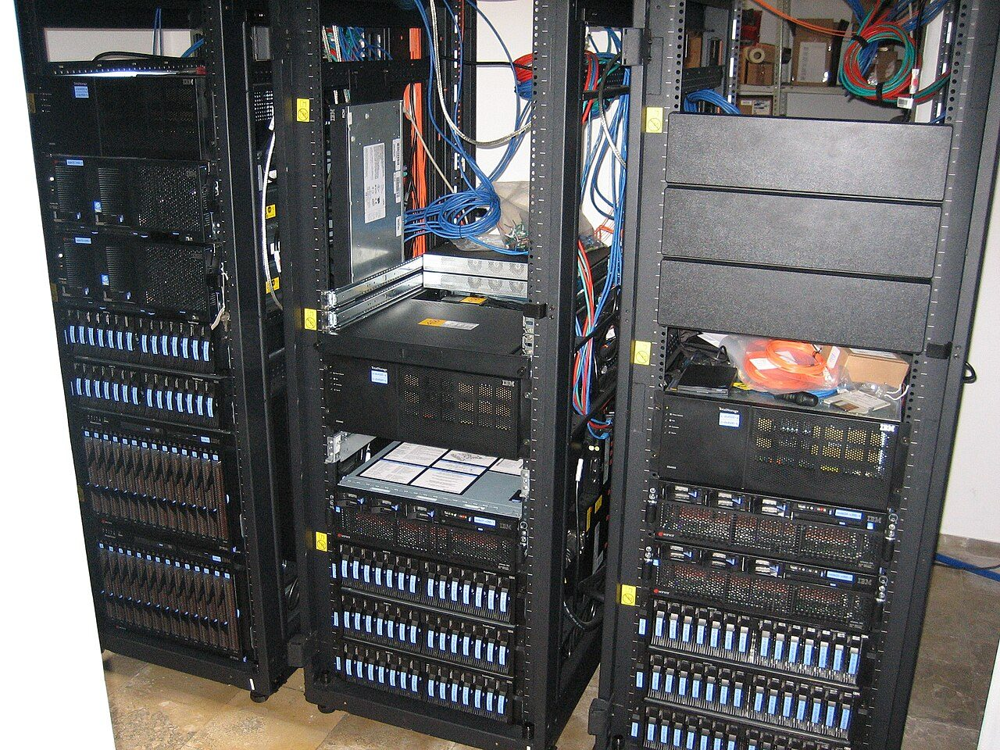
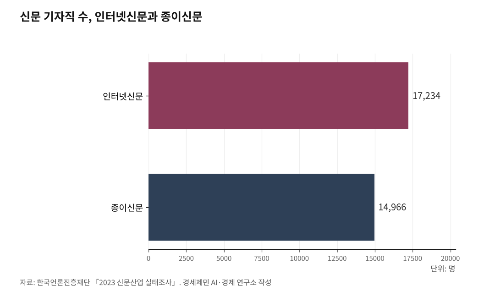

[AGI시대 지역언론①] 자체 AI서비스 가능 조건은 서버
기사 관리 위탁 구조로는 AI 챗봇 등 독자 서비스 개발 어려워
카카오 '카나나'와 업스테이지 '솔라' 등 공개 모델이 대안
언론진흥재단도 2026년 '뉴스룸 자체 AI 구축 필요' 제안
AI경제저널=김갑봉 기자 | 3년만에 AI시대에서 AGI시대로 진입했다. 하지만 지역언론은 시대 독자 서비스를 개발할 기술 기반을 갖추지 못했다. 외부 업체에 기사 관리 체계를 맡기는 구조 때문이다.

한국언론진흥재단(언론재단)이 2026년 1월 공개한 연구보고서 「언론사를 위한 오픈소스 LLM 활용 방안」(전창영·이종혁·백강희)은 "본격적인 뉴스룸 거대언어모델 체계로 나아가려면 공개된 언어모델 기반 자체 구축이 필요하다"고 제안한다. 거대언어모델은 챗GPT나 클로드처럼 방대한 문장을 학습해 사람과 대화하듯 답하는 AI다.
카카오, 업스테이지, LG, 네이버 등도 한국어 공개 모델을 잇따라 풀었다. 누구나 내려받아 자유롭게 고치고 상업적으로 쓸 수 있는 모델이다.
ND소프트 등에 맡긴 지역언론 기사 관리
우선 한국언론재단 '2023 신문산업 실태조사'를 보면 국내 인터넷신문 사업체는 2021년 조사보다 238개가 늘었다. 인터넷신문 기자직 수는 1만7234명으로 종이신문(1만4966명)을 처음 추월했다. 다만 인터넷신문 사업체 가운데 매출 1억원 미만이 67.9%다.
영세 인터넷신문 대다수는 자체 서버와 기사 관리 체계를 보유하지 못했다. 이들 매체 상당수는 ND소프트(엔디소프트), 미디어온, 브레인스톰, 넷퓨, 다다미디어, 넷프로 같은 전문 업체에 기사 관리를 위탁한다.
ND소프트는 2025년 12월 한국인터넷신문협회 공식 협약 문서에서 "가장 많은 언론사에 서비스를 제공하는 국내 최대 콘텐츠 관리 기업"으로 확인됐다. ND소프트는 회사 소개에서 "국내 최초 임대형 인터넷신문 해법"으로 시작해 20여년간 성장했다고 밝혔다.
이들 업체는 영세 인터넷신문이 적은 비용으로 온라인 서비스를 꾸릴 수 있게 만든 공로가 있다. 다만 현 구조로는 AI 시대에 맞는 독자 서비스를 만들기 어렵다.

기자 70%가 AI를 쓰는데, 지역언론은 50% 안팎
AI 시대 들어 기존 위탁 구조 한계는 더 두드러졌다. AI 음성 변환, 맞춤 챗봇, 독자별 뉴스 추천, 검색 증강 생성 같은 새 서비스는 기존 위탁 체계에 얹기 어렵다. 검색 증강 생성이란 자사 기사를 AI가 먼저 찾아본 뒤 답변을 만드는 방식이다.
언론재단이 2026년 1월 공개할 보고서는 국내 언론인 103명 설문 결과를 담았다. 보고서에 따르면 응답 기자 가운데 약 70%가 생성형 AI를 업무에 활용하고 있다고 답했으며, 이 중 30%는 매우 자주 사용한다고 답했다. 다만 인터넷 언론사와 전국 종합일간지, 경제지, 통신사는 활용률이 높은 반면 지역 종합일간지는 50% 안팎으로 상대적으로 낮았다.
한국기자협회는 2019년 보도에서 언론재단 통합 기사 관리 사업이 현장 기자 업무와 맞지 않는다는 불만을 전했다. 출고 예약 단추가 없거나 문장 부호가 연동되지 않는 등 기자 업무 흐름을 반영하지 못했다는 내용이었다.
별도 전수조사 결과도 있다. 언론재단이 2023년 4월~8월 국내 4250개 언론사를 조사한 결과 생성형 AI 활용 경험이 있는 곳은 65곳(1.5%)에 그쳤다. 이는 개별 기자 활용률과 언론사 조직 차원 활용률이 다르다는 점을 보여준다. 기자 개인은 챗GPT를 쓰지만, 매체 차원 공식 AI 도입은 더디다는 뜻이다.
중부일보 지역언론 최초, 동아·한국일보는 본격 출시
자체 AI 서비스 개발에 나선 매체들이 있다. 특히 중부일보는 2025년 9월 지역언론 최초로 AI 검색 서비스를 내놨다.
중부일보는 한국언론진흥재단 빅카인즈(BIG KINDS) API를 활용해 경기·인천 뉴스 아카이브 기반 문장형 AI 검색을 구축했다. 검색 증강 생성 기술을 써서 자사 기사만 근거로 답변을 만든다. 외부 AI의 환각 문제를 막기 위해서다.
민병수 중부일보 디지털뉴스부 부국장은 한국기자협회 보도에서 "당초 언론재단 디지털 미디어 서비스 개발 지원 사업을 받아 구축하려 했으나 비용 대비 효과와 운영 지속가능성을 고려했다"며 "빅카인즈 AI 전면 개편 시점과 맞물려 홈페이지 개발 업체와 빅카인즈 API 지침만으로 구축했다"고 밝혔다. 별도 비용 투입 없이 구축한 지역언론 최초 사례다.
동아일보 미래전략연구소는 2024년 2월15일 동아비즈니스리뷰(DBR) 기사 자료를 학습한 AI 챗봇 '애스크비즈(AskBiz)'를 열었다. 언론재단 '2023년 디지털 미디어 서비스 개발 지원 사업'에 뽑혀 개발비 1억원을 지원받았고, 개발은 빅스터가 맡았다.
김현지 동아일보 미래전략연구소 사업전략팀장은 2024년 미디어오늘 토론회에서 "처음에는 챗GPT 접속구를 쓰지 않고 자체 소형 언어모델을 만들려 했으나 답변 수준이 낮고 서버 비용을 감당하기 어려웠다"며 "이후 거대언어모델로 방향을 바꿨고, 빅카인즈 AI 챗봇 틀과 거대언어모델을 함께 쓰면서 개발비를 아꼈다"고 말했다.
한국일보는 2025년 9월16일 독자용 대화형 검색 서비스 '하이(H.AI)'를 공개했다. 자체 개발 거대언어모델 기반 벡터 자료기지 기술력을 쓴 검색 증강 생성 방식이다. 매일 새 기사를 벡터 자료기지에 반영해 당일 뉴스까지 답한다. 한국일보는 국내 언론사 최초로 2024년 4월 '생성형 AI 활용 준칙'을 공표한 바 있다.
언론재단 빅카인즈 AI는 2024년 2월1일 대화형 서비스를 시작한 뒤 2025년 3월24일 전면 개편했다. 104개 언론사, 8200만건 뉴스 자료를 기반으로 요약과 분석, 문서 분석 기능을 제공한다. 대구일보도 언론재단 '2025년 디지털 미디어 서비스 개발 지원 사업'에 뽑혀 검색 증강 생성 기술을 쓴 AI 보도자료 자동 기사화 체계를 짓고 있다.
서버 1대 3억~4억원, 지역언론 혼자 감당 어려워
자체 서버 구축이 어려운 까닭은 비용이다. 한국일보 2025년 7월 보도를 보면 엔비디아 H100 그래픽처리장치(GPU) 한장 값은 4000만~5000만원대다. H100 8장을 얹은 서버 1대를 들이려면 3억~4억원이 든다.
서울시는 2025년 8월 차세대 H200 그래픽처리장치 8장을 얹은 자체 서버를 도입해 '챗봇 2.0' 사업을 폐쇄망에 구축 중이다. 내년까지 서버 3대를 더 들여놓을 계획이다.
지역언론 한 곳이 이를 홀로 감당하기는 어렵다. 그렇다고 챗GPT나 클로드 같은 상용 AI 접속구에 계속 기대는 것도 답이 되지 못한다. 사용량이 늘면 비용이 불안정해지고, 기사 원고와 취재 메모, 독자 정보 같은 핵심 자산이 외부 서버로 흘러나간다.
김 팀장은 같은 토론회에서 "개별 언론사가 독자와 거리를 좁히고 직접 소통할 접점을 찾아내지 못하면 AI 빅테크가 그 일을 대신할 것"이라며 "개별 언론사가 콘텐츠 공급자나 자료 공급자에 그칠 수 있다"고 말했다.
지역언론에는 더 절박한 문제다. 외부 상용 AI에 기사와 취재 자료를 계속 넘기면, 그 자료로 학습한 AI가 결국 지역언론을 대체한다.
카카오 카나나·업스테이지 솔라 등 한국어 공개 모델
공개 모델은 이 문제에 현실 대안이 된다. 자체 서버에 내려받아 닫힌 망에서 돌리면 자료 주권을 지킬 수 있다.
카카오는 2025년 5월23일 자체 개발한 언어모델 '카나나(Kanana) 1.5' 80억 매개변수와 21억 매개변수 모델 4종을 아파치 2.0 허락증으로 풀었다. 아파치 2.0은 누구나 자유롭게 고치고 상업적으로 쓸 수 있는 허락증이다. 매개변수는 언어모델이 학습한 지식 단위로, 매개변수가 많을수록 더 복잡한 문제를 다룰 수 있다.
카카오는 "에이전트형 AI를 구현할 코딩과 수학 능력, 함수 호출 능력이 전작보다 평균 1.5배 올랐다"고 밝혔다. 카카오는 2025년 7월 카나나-1.5-15.7B 모델을 더 풀었고, 2026년 1월에는 320억 매개변수 카나나-2를 열었다. 카카오는 "고가 기반시설 없이도 실용 에이전트 AI를 만들 수 있게 보편 컴퓨팅 환경에서 고효율을 내는 모델"이라고 설명했다.
업스테이지는 2023년 12월 107억 매개변수 모델 '솔라(Solar) 10.7B'를 아파치 2.0 허락증으로 풀어 허깅페이스 공개 언어모델 순위표 1위에 올랐다. 2025년 7월에는 310억 매개변수 '솔라 프로 2'를 내놓았다.
LG AI연구원은 2024년 8월 '엑사원(EXAONE) 3.0'을 연 뒤 3.5, 딥(Deep) 시리즈로 이어갔다. 네이버는 2025년 '하이퍼클로바 X-시드(X-SEED)'를 상업 활용이 가능한 형태로 풀었다. 메타 라마(Llama), 미스트랄, 알리바바 큐웬(Qwen) 같은 해외 공개 모델도 쓸 수 있다.
작은 모델은 진입 문턱이 낮다. 카나나 21억 매개변수나 엑사원 7.8B 같은 모델은 일반 게임용 그래픽카드에서도 추론이 가능하다. 자사 기사 모음을 검색 증강 생성 방식으로 엮으면 취재 보조, 기사 초안, 기사 요약, 독자 챗봇 같은 서비스를 만들 수 있다.
4단계 길
당장 모든 매체가 자체 서버에 거대 모델을 돌릴 수는 없다. 단계별 접근이 현실적이다.
1단계는 자료 주권과 공공 기반시설 활용이다. 챗GPT와 클로드 같은 상용 AI를 계속 쓰더라도, 기사와 취재 자료를 학습용으로 넘기지 않는 계약 조건을 넣고 기사 모음과 독자 정보는 자체 자료기지로 관리한다. 중부일보 사례처럼 언론재단 빅카인즈 API 같은 공공 기반시설을 엮으면 별도 비용 없이 AI 검색 서비스를 구축할 수도 있다.
2단계는 개별 매체 소형 자체 서버 구축이다. 업계 자료를 보면 70억~150억 매개변수 공개 모델 1대와 그래픽처리장치 1~2장을 얹은 로컬 서버 하드웨어 값은 300만~700만원대로 추산된다.
여기에 자료기지 서버, 검색 증강 생성용 색인 저장소, 보안과 복제 장비, 초기 개발과 교육 비용을 더하면 매체당 초기 예산은 1000만~3000만원대로 분석된다. 독자 챗봇 시험 운영이나 기사 요약 보조 수준은 이 규모로 가능하다.
3단계는 광역권 공동 고성능 기반시설이다. H100 8장 서버 1대 3억~4억원을 영남, 호남, 중부, 강원, 제주 같은 광역권 지역언론 컨소시엄이 함께 짓는다면 매체당 분담금은 수천만원대로 내려간다. 광역권 한 곳에 매체 수십개가 참여해 나눠 부담하는 구조다.
언론재단은 '2025년 디지털 미디어 서비스 개발 지원 사업'에서 언론사 사이 컨소시엄에 가점을 주고, 소스코드 공개 확약서를 낸 매체에 추가 가점을 줬다. 한 매체 개발 결과물을 다른 매체가 쓸 수 있게 길을 텄다.
4단계는 매체별 미세조정이다. 미세조정이란 공개 모델에 자사 기사와 문체를 추가로 학습시켜 매체 특성을 반영하는 과정이다. 공동 기반시설 위에 매체가 각자 미세조정한 모델을 얹어 고유 문체와 편집 기준을 담은 챗봇과 요약, 분석 서비스를 만든다.
공공 지원 확대가 과제
언론재단은 2026년 1월 공개 예정인 보고서에서 자체 구축 근거로 세가지를 들었다. 첫째 비용 예측 가능성, 둘째 기사 원고와 취재 메모, 독자 정보 같은 핵심 자산의 자료 통제와 보안, 셋째 매체별 문체와 편집 기준을 반영하는 뉴스룸 맞춤이다.
지역신문발전위원회는 지역신문발전기금으로 '지역신문 제안 사업'을 운영한다. 짝꿍 기금 방식이며 지역언론이 제안한 디지털 혁신 과제에 10% 이상 자부담 조건으로 지원한다. 다만 현 사업 구조는 개별 매체 단위 지원에 머물러 광역권 공동 기반시설 구축에는 한계가 있다.
지역신문발전기금에 AI 기반시설 별도 길을 내고, 언론재단 통합 기사 관리 사업을 공개 언어모델 연계 사업으로 넓히며, 광역 자치단체가 가진 자료센터를 지역언론과 나누는 방안을 학계와 업계가 제안하고 있다. 다만 이 방안들은 아직 제도로 자리잡지 못한 제언 수준이다.
지역언론 외주 위탁 구조를 자체 기반시설로 바꾸는 일은 개별 매체가 혼자 감당하기 어렵다. 동시에 지역 뉴스와 기사 모음, 독자 관계는 대형 포털이나 빅테크가 따라올 수 없는 지역언론 고유 자산이다. 이 자산을 자료 주권을 지키며 AI로 다시 가공하느냐가 지역언론 지속 가능성을 가를 분기점이다.
※ 이 기사는 AI 프로그램 클로드를 활용해 작성했습니다.
참고문헌
· "2023 신문산업 실태조사", 한국언론진흥재단, 2024.1.31., 뉴시스 보도 https://www.newsis.com/view/NISX20240131_0002611936
· 전창영·이종혁·백강희, 「언론사를 위한 오픈소스 LLM 활용 방안」, 한국언론진흥재단 연구보고서, 2026년 1월 공개 예정, 요약 https://kpf.or.kr/front/news/articleDetail.do?seq=600208
· "인신협, 인터넷신문 자율규제에 AI 도입... 기관 네곳과 업무협약", 겟뉴스, 2025.12.18., https://www.getnews.co.kr/news/articleView.html?idxno=854003
· "ND소프트 회사소개", ND소프트(엔디소프트) 누리집, https://www.ndsoft.co.kr
· "언론재단 통합CMS 도입 매체 불만 보도", 한국기자협회보, 2019., http://journalist.or.kr/news/article.html?no=46189
· "국내 언론사 생성형 AI 활용 현황 조사", 한국언론진흥재단, 2024., https://www.kpf.or.kr/front/research/selfDetail.do...
· "중부일보, 지역언론 첫 AI 검색 서비스… 빅카인즈 API 활용", 한국기자협회, 2025.9.9., https://www.journalist.or.kr/news/article.html?no=59280
· "[알림] 중부일보, 지역언론사 최초 AI 검색 서비스 구축", 중부일보, 2025.8., https://www.joongboo.com/news/articleView.html...
· "동아일보 애스크비즈 개발 사례", 한국언론진흥재단 신문과방송, 2024., https://www.kpf.or.kr/front/research/selfDetail.do...
· "20년 방송 현장 있었는데 지금이 미디어 판도 바뀌는 시점", 미디어오늘, 2024.9.4., https://www.mediatoday.co.kr/news/articleView.html...
· "[알립니다] 한국일보와 대화해보세요… 'H.AI 대화형 검색' 오픈", 한국일보, 2025.9.16., https://www.hankookilbo.com/News/Read/A2025091512080005337
· "한국언론진흥재단, 대화형 '빅카인즈 AI' 공개", 뉴시스, 2024.2.1., https://www.newsis.com/view/NISX20240201_0002612854
· "매일 1만여건 뉴스, '빅카인즈 AI'에 맡기면 요약·분석 무료", 정책브리핑, 2025.4.7., https://www.korea.kr/news/policyNewsView.do?newsId=148941416
· "2025년 디지털 미디어 서비스 개발 지원 사업 공모", 한국언론진흥재단, 2025.2.24., https://www.kpf.or.kr/front/board/boardContentsView.do...
· "2025 디지털 미디어 서비스 개발 지원사업 개발사 선정 입찰 공고", 대구일보, 2025.5.23., https://www.idaegu.com/bbs/view.html?idxno=21
· "AI 발목 잡는 GPU 가격", 한국일보, 2025.7.22., https://www.hankookilbo.com/News/Read/A2025072110570001636
· "카카오, 자체 개발 'Kanana' 언어모델 4종 공개 소프트웨어 공개", 카카오 공식 보도자료, 2025.5.23., https://www.kakaocorp.com/page/detail/11566
· "카카오, 'Kanana-2' 모델 4종 공개 소프트웨어 추가 공개", 카카오 공식 보도자료, 2026.1.20., https://www.kakaocorp.com/page/detail/11904
· "Solar Pro 2 출시", 업스테이지 공식 블로그, 2025., https://www.upstage.ai/blog/ko/solar-pro-2-launch
· "국내 주요 기업 공개 언어모델 현황 분석", 공개SW 포털, 2025.5.27., https://www.oss.kr/.../9246eca5-f639-484c-be09-797d76fc9582
사진 출처
· [대표사진] Wolfgang Stief, "IBM servers (1).jpg", 위키미디어 공용, CC0, https://commons.wikimedia.org/wiki/File:IBM_servers_(1).jpg
※ 이 기사는 인공지능을 활용해 작성했습니다.
관련기사
- [AGI시대 지역언론⑤] 오픈소스로 열린 지역언론 AI, 재원 구조가 발목
- [AGI시대 지역언론④] AI 기사 시대, 저널리즘 원칙 지키는 세 기둥
- [AGI시대 지역언론③] 350만원에서 시작하는 지역언론 AI 서버
- [AGI시대 지역언론②] 빅카인즈 API 연동, 별도 비용 없이 AI 검색 개통
저작권자 © AI경제저널 무단전재 및 재배포, AI학습 및 활용 금지